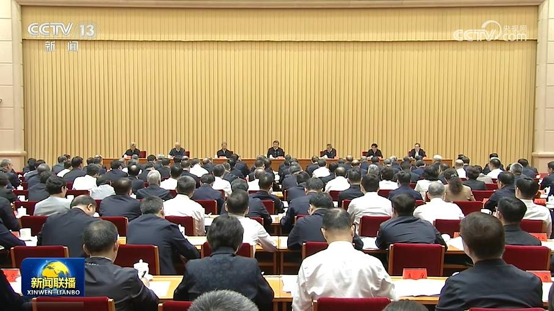
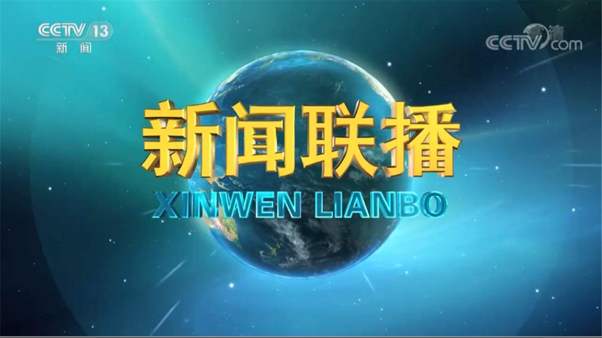
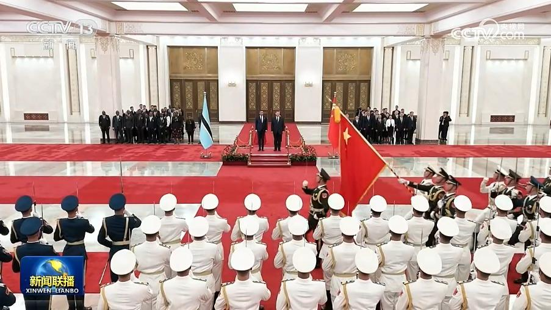
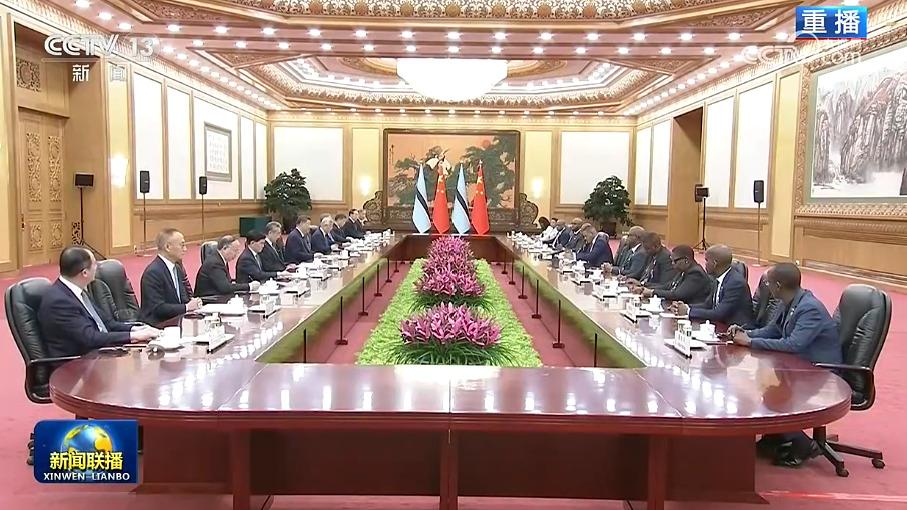
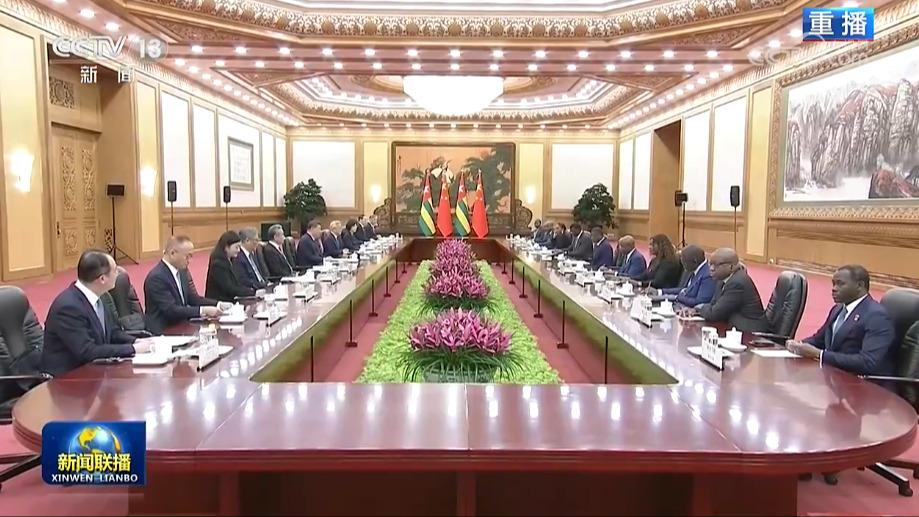
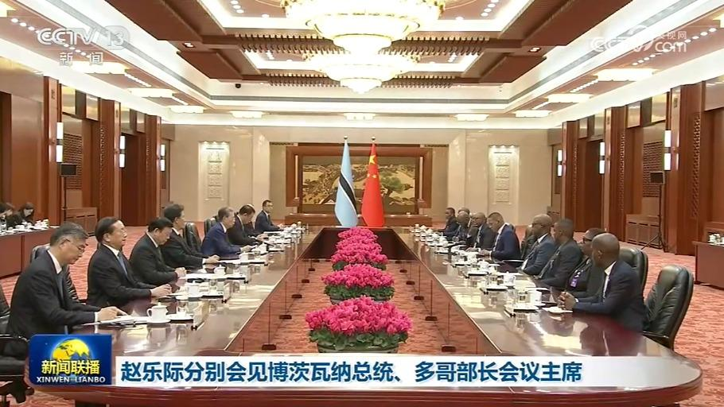
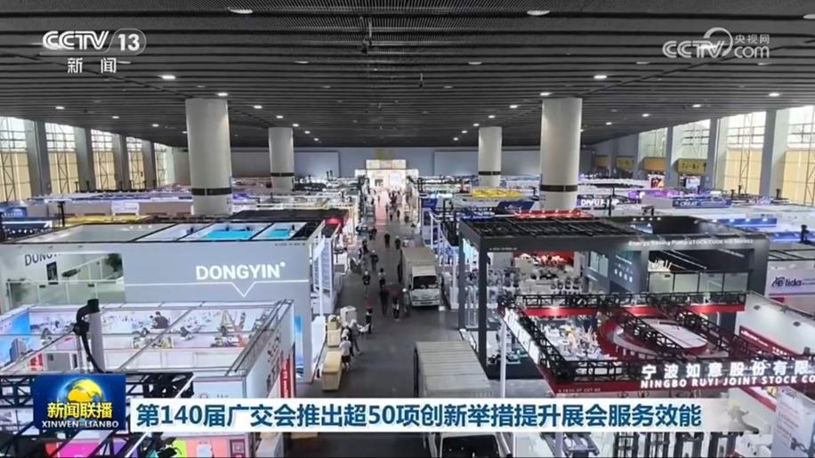
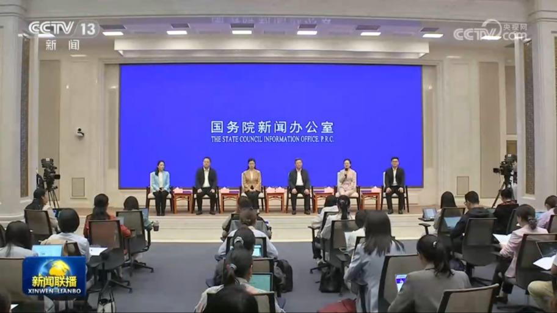
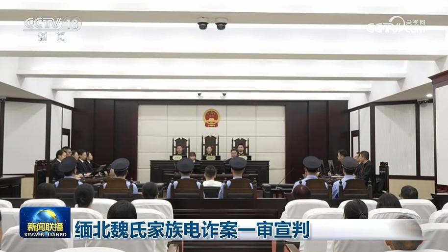
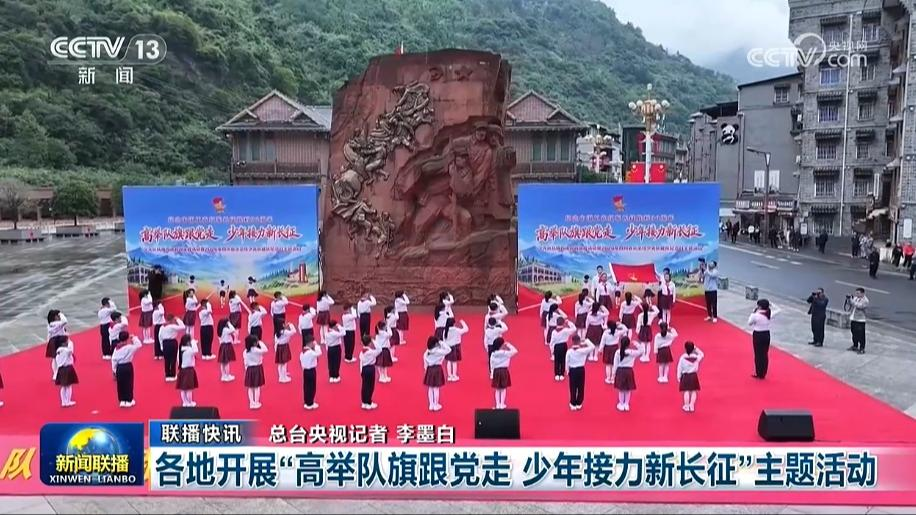

01

习近平在全国卫生与健康大会上强调 坚定不移走中国特色卫生与健康发展道路 确保“十五五”时期健康中国建设取得决定性进展
习近平在全国卫生与健康大会上强调坚定不移走中国特色卫生与健康发展道路


习近平在全国卫生与健康大会上强调坚定不移走中国特色卫生与健康发展道路
本台今天（10月13日）播发央视快评《确保健康中国建设取得决定性进展》。

国家主席习近平13日下午在人民大会堂北大厅举行仪式，欢迎博茨瓦纳共和国总统杜马·希代翁·博科对我国进行国事访问。

10月13日下午，国家主席习近平在北京人民大会堂同来华进行国事访问的博茨瓦纳总统博科举行会谈。两国元首宣布将双边关系提升为全面战略合作伙伴关系。

10月13日下午，国家主席习近平在北京人民大会堂会见来华进行正式访问的多哥部长会议主席福雷。两国领导人宣布将双边关系定位提升为新时代中多命运共同体。
10月12日，国家主席习近平致电于勒·马迪塞，祝贺她就任爱沙尼亚共和国总统。

全国人大常委会委员长赵乐际10月13日下午在北京分别会见博茨瓦纳总统博科、多哥部长会议主席福雷。

第140届广交会开幕在即，本届广交会将推出超50项创新举措，提升服务效能。在智慧应用方面，展会将人工智能、大数据等深度嵌入办展全过程。首次推出22个智慧应用场景和16项AI特色应用。通过广交会App，可导航至全馆各个展位。

国务院新闻办公室今天（10月13日）举行“新征程上的奋斗者”中外记者见面会。5位来自气象领域的代表，围绕“监测预报护冷暖 气象服务惠民生”主题与中外记者见面交流，分享他们在天气监测预报预警、台风智能预报模式研究、海岛和高原气象服务、基层气象防灾减灾等领域的实践与感悟。展现了新时代气象工作者践行“人民至上、生命至上”理念和发扬“忠诚为民、精准及时、创新奉献”的优良传统。

今天（10月13日），福建省泉州市中级人民法院和南安市人民法院对魏家犯罪集团系列案一审公开宣判。魏怀仁、陈大卫、廖景芳等3人被判处死刑，魏青涛等58人被判处无期徒刑至三年三个月不等有期徒刑，并处罚金、没收财产、驱逐出境等附加刑。

新修订的《烈士纪念设施保护管理办法》11月起施行